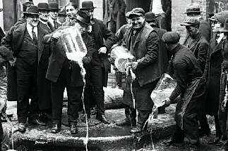

Борис Акунин
Мой календарь
Имеется в виду избавление от всяческих вредных зависимостей, какими бы они ни были.
17 января 1920 года самая большая демократия планеты, Соединенные Штаты Америки, совершенно демократическим путем - после голосования в обеих палатах - начала эксперимент по избавлению от самой древней и самой деструктивной привычки человечества. Пьянства.
«Сухие», как называли поборников трезвости, одолели «мокрых», защитников алкоголя, и в стране вступил в силу Сухой закон.
В этот исторический день кто-то из принципа выпьет, но может быть, сыщутся и такие, кто, наоборот, завяжет. Если вы пошли по второму пути, держитесь. Докажите себе, что вы сильнее Соединенных Штатов.
Они-то, как известно, тринадцать лет спустя развязали. Минусов в абстиненции оказалось больше, чем плюсов.
С одной стороны, резко сократилась смертность новорожденных (не стало «пьяных зачатий»), почти исчез цирроз печени, «белая горячка» и прочие алкогольные психозы превратились в экзотику. С другой, оскудел бюджет, расцвела мафия, десять тысяч человек отравились денатуратом.
Вы в гораздо лучшем положении, чем США. Если перестанете пить, ваш бюджет не оскудеет. Аль Капоне вас не застрелит. А денатурат просто не пейте, и всё, он невкусный. Зато все плюсы (см. выше) вам гарантированы.
Ну а если употребление алкоголя не является для вас проблемой, сегодня правильный день избавиться от любой другой вредной зависимости. Курения, переедания, прокрастинации, неразделенной любви, нытья на жизнь и жалости к себе.
Удачи вам!